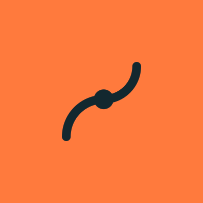

About the concept
An original practice concept. A working website.
How useful content, a recognisable brand and clear handoffs can support an orthopedic and rehab journey.
The brief
Adults with a joint or movement concern, people comparing specialist care, and patients coordinating therapy after a referral. A long specialty list makes the patient do the routing work.
The reference
The layout follows the calm, hospitality-grade structure of a premium clinic site: centred section heads, rounded flat cards, one action per section, location pages with an address card. OrthoVirginia informed the care-routing research: connect body-area discovery, specialist care, urgent options and physical therapy. Neither organization commissioned, endorsed or participated in this project.
Persona
Dana Whitfield, 52 (fictional). School administrator and weekend hiker. Her knee has ached for eight months and now stops her on the stairs; her GP said “see someone”.
She wants
- A diagnosis conversation on the first visit
- Imaging without a second trip when it’s needed
- Physical therapy considered before surgery
- To know who bills what before she arrives
She worries about
- Being rushed toward surgery
- Surprise bills from places she never visited
- A long recovery that doesn’t fit her week
- Feeling like “just an old knee” at a clinic for athletes
What is not claimed
No operating clinic, real providers, patient research interviews, clinical review, system integration, live campaign or measured business result. Locations, hours and visual scenes are fictional or marked sample. Any real launch would need verified operational content and appropriate professional review.
Brand system
The Reframe identity
A symbol of two offset arcs meeting at a pivot: a joint and its range. A light, wide-tracked grotesque wordmark. One colour per lockup.
 Horizontal lockup, for dark grounds
Horizontal lockup, for dark grounds- Horizontal lockup, for light grounds
 Stacked lockup
Stacked lockup- Wordmark
- Symbol
- Favicon
 Social avatar
Social avatar
Social avatar, accent
Palette
- Ink ground
#13282FPage ground, header and most sections - Deep ink
#0D1E24The one darker band: locations, body map, footer - Raised ink
#1A333BCards and panels on the ground - Bone
#F3F2ECText on dark; the reading band for long pages - Mist
#B9C6C9Secondary text on dark - Tangerine
#FF7A3DActions and key numerals only - Soft tangerine
#FFB18AOwner notes and small highlights - Rust
#963C18Tangerine’s stand-in on the bone band - Urgent
#FF8A80The 911 line on dark (with an icon, never colour alone)
Contrast pairs (WCAG 2.1, AA needs 4.5:1 for text)
- AaBone on Ink ground 13.6:1
- AaMist on Ink ground 8.7:1
- AaInk ground on Tangerine 5.9:1
- AaTangerine on Ink ground 5.9:1
- AaSoft tangerine on Ink ground 8.7:1
- AaBone on Raised ink 11.8:1
- AaInk ground on Bone 13.6:1
- AaRust on Bone 6.3:1
- AaUrgent on Ink ground 6.7:1
- AaInk ground on Soft tangerine 8.7:1
Type
One family, Archivo by Omnibus-Type, self-hosted under the SIL Open Font License 1.1 (licence text). No condensed widths, no italics, no serif.
- HeroArchivo 300, 104% width, 56–76px, line height 1.02, sentence case
- Section head (h2)Archivo 300, 104% width, 36–52px, line height 1.08, centred
- Card head (h3)Archivo 500, 100% width, 20–24px
- BodyArchivo 400, 100% width, 17–18px, line height 1.6, 70 characters at most
- LabelArchivo 600, 12px, uppercase, 0.14em tracking; only above section heads and in fact cells
- NumeralsArchivo 200, 56–88px, tangerine; only for steps and process facts
Icons
24px grid, 1.6 stroke, round caps and joins, no fills.
- pin
- clock
- car
- transit
- ramp
- phone
- calendar
- referral
- scan
- brace
- move
- bill
- check
- arrow
- joint
- alert
- chat
Voice
- Say what happens next, plainly.
DoYou’ll talk first, then the specialist examines your knee.
Don’tExperience our comprehensive diagnostic journey.
- Talk to the person, not the joint.
DoWhat do you want to get back to?
Don’tOptimise your musculoskeletal performance.
- Be straight about cost and uncertainty.
DoAsk whether imaging is billed by a separate center.
Don’tMost plans cover everything.
Photography
One grade for every shot: soft natural light, warm highlights, cool deep-ink shadows, low saturation, slight matte; nothing neon, no MRI-tube spectacle. Models only (illustrative), no real patients or staff. Leave calm negative space for headlines where noted. 14 slots, listed in shots.json, each cropped to its final size and credited below.
Image credits
14 photographs: 5 free-licence stock photos (Unsplash and Pexels) for places and details, and 9 images generated with Canva for people, so the persona looks like the same person throughout. Everyone shown is an illustrative model. Nobody is a real patient, and no photo shows a real member of staff.
hero-trailAI-generated with Canva. An illustrative model, not a real person, patient or clinician.consult-roomAI-generated with Canva. An illustrative model, not a real person, patient or clinician.knee-examPhoto by Funkcinės Terapijos Centras on Pexels (Pexels License).shoulder-bandAI-generated with Canva. An illustrative model, not a real person, patient or clinician.pt-squatAI-generated with Canva. An illustrative model, not a real person, patient or clinician.clinic-duskPhoto by Littlehampton Bricks on Pexels (Pexels License).entrancePhoto by Timothy Huliselan on Pexels (Pexels License).receptionPhoto by Neon Wang on Unsplash (Unsplash License).still-lifePhoto by KoolShooters on Pexels (Pexels License).role-specialistAI-generated with Canva. An illustrative model, not a real person, patient or clinician.role-therapistAI-generated with Canva. An illustrative model, not a real person, patient or clinician.role-coordinatorAI-generated with Canva. An illustrative model, not a real person, patient or clinician.role-frontdeskAI-generated with Canva. An illustrative model, not a real person, patient or clinician.life-gardenAI-generated with Canva. An illustrative model, not a real person, patient or clinician.